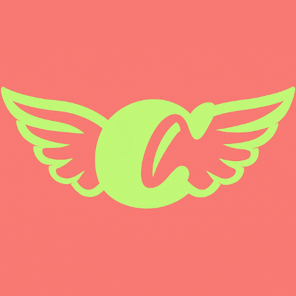

"Funcionalidades Adicionales JavaScript"
Sección:
Tabla comparativa
Encuesta
Encuesta para Elegir la Mejor Metodología
Responde las siguientes preguntas y descubre qué metodología se adapta mejor a tu proyecto.
1. ¿Tu proyecto requiere cambios frecuentes?
Selecciona
Sí, muchos
Algunos
Pocos
2. ¿Tu equipo tiene experiencia con metodologías ágiles?
Selecciona
Sí, mucha
Algo
Ninguna
3. ¿El proyecto tiene un plazo muy estricto?
Selecciona
Sí
Parcialmente
No
4. ¿Qué tan seguido cambian los requisitos?
Selecciona
Frecuentemente
A veces
Rara vez
5. ¿El cliente participa activamente?
Selecciona
Sí, constantemente
Ocasionalmente
No
6. ¿Qué tan grande es tu proyecto?
Selecciona
Muy grande
Mediano
Pequeño
7. ¿Tu equipo prefiere entregas frecuentes?
Selecciona
Sí, cada semana
Sí, por sprints
No, al final
8. ¿Es importante la documentación detallada?
Selecciona
Muy importante
Moderada
Poca
9. ¿El presupuesto es flexible?
Selecciona
Sí, flexible
Algo
No
10. ¿Tu equipo es multidisciplinario?
Selecciona
Sí, totalmente
Parcialmente
No
Ver Recomendación
Volver atras